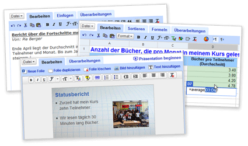
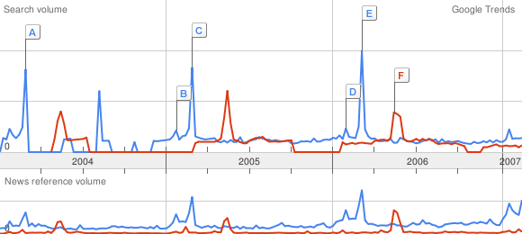

Blog
Gemeinsam gegen Spams
Vier der grössten Schweizer Internetprovider spannen im Kampf gegen die Spam- Flut zusammen. Unter dem Namen S.I.A.S (Swiss ISPs Against Spam) treten Bluewin, Cablecom, Green.ch und Sunrise gemeinsam an.
Bereits realisiert ist unter http://www.stopspam.ch eine Plattform im Internet.
Google Docs
Google entwickelt sich von der Suchmaschine immer mehr zum Alleskönner im Netz. Neustes Projekt ist "Google Docs".
Mit diesem online-Tool soll das Erstellen, das (gemeinsame) Bearbeiten und das Verwalten von Dokumenten revolutioniert werden. Und tatsächlich, die Beta- Version macht einen sehr guten Eindruck. Die Darstellung ist sehr übersichtlich und die Bedienung kinderleicht.

Google Mars
Nach Erde und Mond lässt sich nun auch der Mars elektronisch erkunden. Google machts in Zusammenarbeit mit der Arizona State Universität möglich. Wer also bis jetzt in Google Earth (http://earth.google.com) in den Garten des Nachbars schaute, kann jetzt bei Google Mars nach den berühmten grünen Männchen suchen...
Google mit Selbstzensur im chinesischen Markt
Mit einer massiven Selbstzensur will sich Google den chinesischen Internetmarkt erschliessen. So werden beispielsweise Suchergebnisse zu den Themen "Tiananmen" oder "Tibet" in in der chinesischen Google-Version nicht angezeigt. So gibt google.cn (nur innerhalb Chinas erreichbar) mehr oder weniger die Meinung der chinesischen Regierung wieder. Ob sich diese Selbstzensur für Google wirtschaftlich auszahlt ist mehr als fraglich. Das Image als unabhängigie Datenquelle in der westlichen Welt leidet jedoch sicher massiv unter einer solchen Massnahme.
Google trends
Nach der Erweiterung von "Google Trends" zu "Google Hot Trends", lohnt es sich wieder einmal etwas mit Google Trends zu spielen. Das Tool liefert eine spannende Aufbereitung der Verteilung bestimmter Suchabfragen über einen Zeitraum von zweieinhalb Jahren. Auch der direkte Vergleich zweier unterschiedlicher Begriffe ist damit möglich.
Let's go (die Interpretation bleibt dabei natürlich nach wie vor dem user überlassen...):
krankenkasse (blau), krankenversicherung (rot) link

Auch nach dem Namenswechsel von Krankenkasse zu Krankenversicherung, suchen Schweizerinnen und Schweizer nach wie vor nach dem Begriff "Krankenkasse". Auch in der Grafik ersichtlich sind die jeweiligen Ausschläge Ende Jahr, wenn viele Versicherte im Begriff sind ihre Krankenkasse (pardon Krankenversicherung) zu wechseln.
oscar (blau), cannes (rot) link

Mega-Events wie die Oscarverleihungen oder im Vergleich dazu das Filmfestival von Cannes führen zu einem markanten Anstieg der Suchanfragen.
obama (blau), clinton (rot), mccain (gelb), giuliani (grün)link

"Googlein, Googlein an der Wand, wer wird Präsident im US-Land?" Die Ergebnisse sind bei dieser Auswertung auf die USA eingeschränkt. Allerdings bleibt den zurückliegenden Kandidaten ja noch etwas Zeit.
e-mail (blau), spam (rot) link
Etablierte Internet-Technologien wie e-mail scheinen im Suchvolumen eher rückläufig zu sein; auch der lästige spam hat - zumindest bei den Suchanfragen - einen negativen Trend.
ajax (blau)link

Will man dem letzten Internet Hype "AJAX" nachspüren, so zeigt sich eine eindeutige Schwäche des Tools. Es wird nämlich nicht unterschieden, ob sich der Begriff auf den Fussballverein aus Amsterdam oder auf das Akronym "Asynchronous JavaScript and XML" bezieht (eigentlich könnte ja auch noch der griechische Held namens Ajax gemeint sein...).